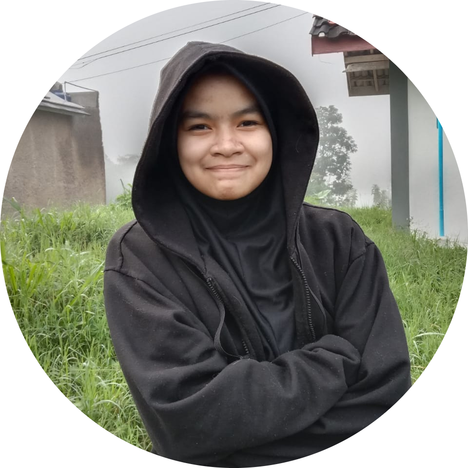

Profile Saya

Tentang Saya
Nama saya adalah Wafa Tsabita. Saya lahir di kota Newcastle pada tanggal 28 Agustus 2003. Saya kuliah di Universitas Padjadjaran dan mengambil jurusan Teknik Informatika.
Pengalaman Kerja
- Software Engineer di PT DEF (Januari 2018 - Saat ini)
- Web Developer di PT GHI (Januari 2016 - Desember 2017)
Keahlian
- Pemrograman Java
- Pembuatan website menggunakan HTML, CSS, dan JavaScript
- Database management